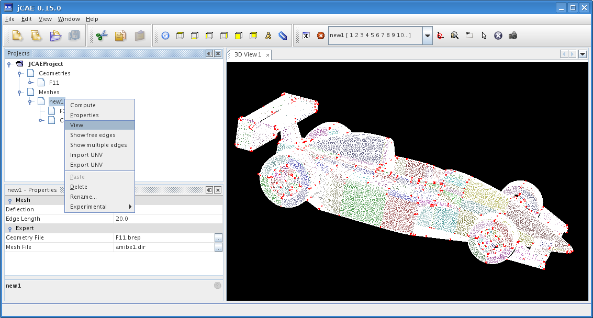
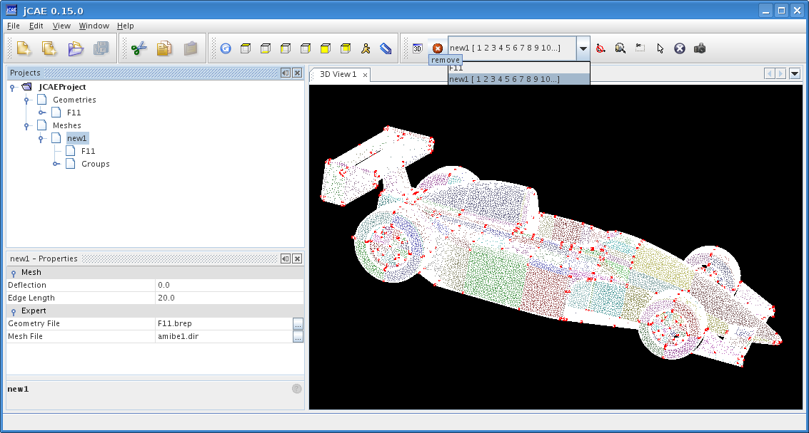
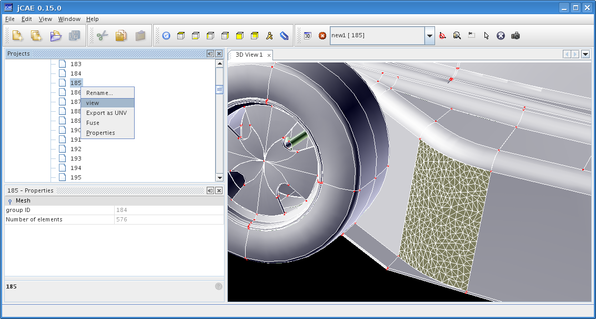
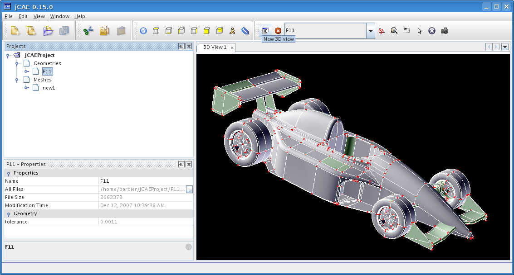
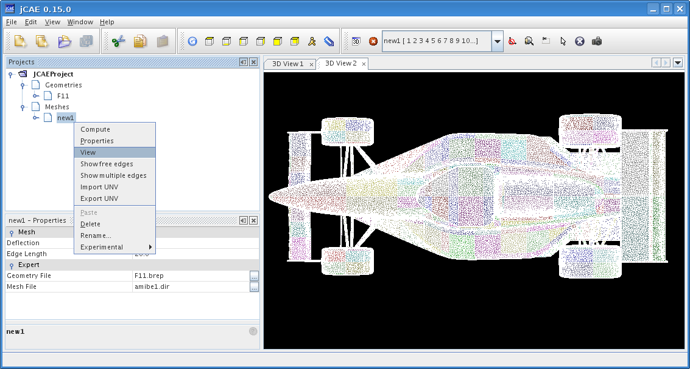
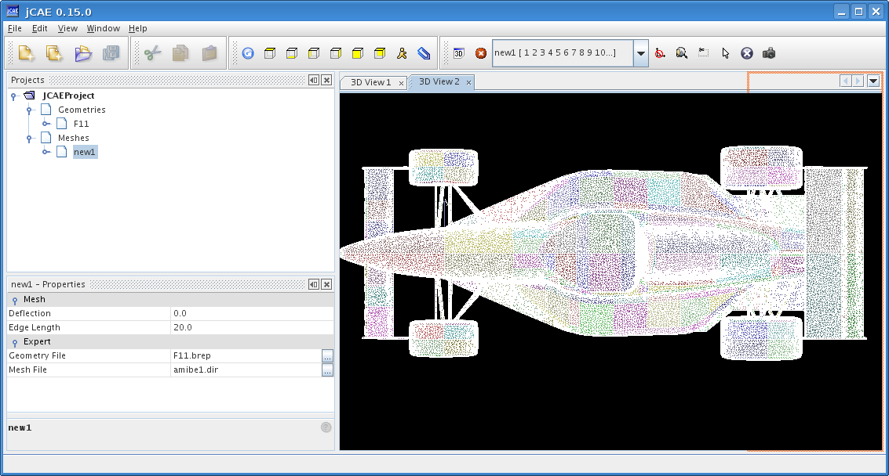
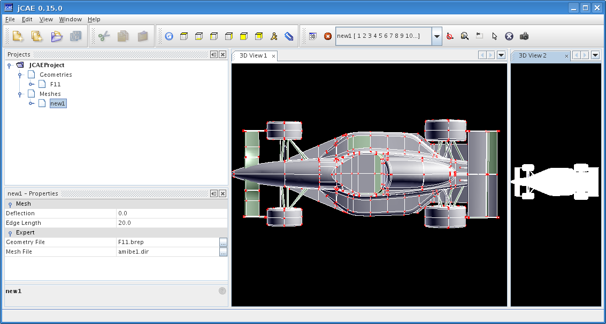
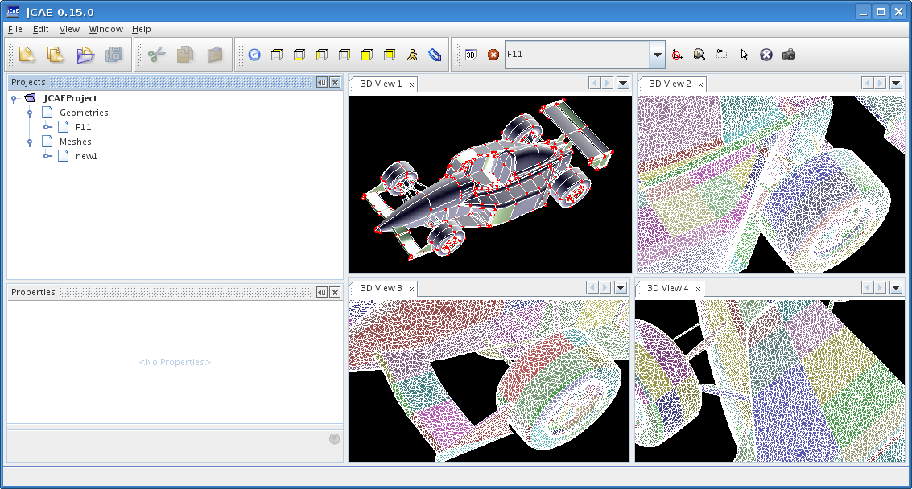

Several objects can be displayed on a single view. For instance, if CAD shape is displayed and you select View in mesh menu, you will obtain this image:

This image is not very useful, but there is no way to undo this action from mesh menu. Fortunately this can be done, but directly from View object. Select the object to delete in scrolling list, and click on remove icon.

Maybe you wanted to display only one face, you can expand the Groups node and display a single face.

It is also possible to display several views at the same time. Click on New 3D view icon.

Selection View from mesh menu will then display mesh in this new view.

Views can be rearranged, for instance you can select this new view and move it at the right side, a red framed rectangle shows where this view will be moved on.

Here is the result:

You can move separators between views, and with little practice obtain this result:

Imagine that you want to view display the interior of a volume. One could explode geometry shape into faces, and display only desired faces. But this is very unpractical with large CAD shapes. An alternative is to use clipping, as described below. First action is to put shape in a position to ease clipping, this is often achieved by selecting one of the predefined views:
Click on Create a clip rectangle icon

and select a region:

Everything outside selected region is hidden. You need to click on Restore default viewer mode icon to be able to move camera again.

This view allows to see inside closed volumes.

To see the whole shape again, click on Remove clip rectangle or clip box icon.

Fit All icon adjusts camera position to ensure that whole shape is visible.